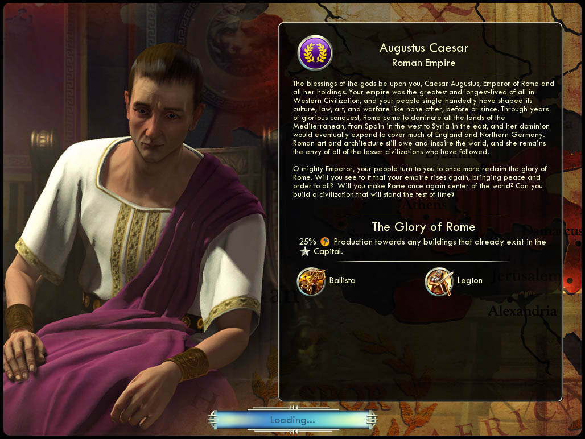

아우구스투스 카이사르 Augustus Caesar로마 Rome |
|  |
| 로마의 모든 속주의 황제이신 카이사르 아우구스투스여, 황제 폐하께 신의 축복이 내리시길 빌겠습니다. 그대의 제국은 서양 문명 중에서 가장 위대하고 가장 길었으며, 그대의 백성들은 스스로의 힘으로 전무후무할 문화와 법, 예술과 전쟁을 이룩했습니다. 영광스러운 정복의 시대 이후 로마는 서쪽으로는 스페인 그리고 동쪽으로는 시리아에 이르는 지중해의 모든 대지를 지배하게 되었고, 로마의 지배력은 마침내 영국과 북부 독일까지 미치게 되었습니다. 또한, 로마의 예술과 건축술은 뒤따르는 모든 미진한 문명의 선망의 대상이 되었습니다.
위대한 황제여, 그대의 백성은 다시 한 번 로마의 영광을 되찾고 싶어합니다. 제국을 다시 일으켜 세상에 안녕과 질서를 가져오시지 않겠습니까? 로마를 다시 한 번 세상의 중심으로 만들고 시간의 한계를 뛰어넘는 문명을 건설해 주시겠습니까? |
| 속성 | |
|---|---|
| 특성 |
로마의 영광
(The Glory of Rome) 수도에 건설된 건물을 다른 도시에서 건설할 때 생산이 25% 증가합니다. |
| 고유유닛1 |
발리스타
(Ballista) 투석기 대체 유닛입니다. 전투력이 7에서 8, 원거리 공격력 8에서 10으로 증가합니다. 도시 공격 시 공격력 보너스 +200% 승급을 받습니다.(투석기의 원래 기능) |
| 고유유닛2 |
군단병
(Legion) 검사 대체 유닛입니다. 전투력 14에서 17로 증가합니다. 길과 요새를 만들 수 있습니다. |